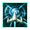
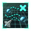
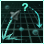
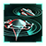
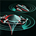
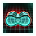
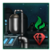

Exploration
Exploration is one of the first priorities of any spacefaring empire. At the start of the game, an empire begins with no known knowledge of the universe beyond their home system. To learn more about other systems an empire must send science ships, with a Scientist leader, out to survey them. Early game exploring is key for the early rapid growth of an empire, however caution is warranted. Events and anomalies may be discovered while surveying that can be either boons or banes. Part of the  Discovery Tradition focuses on exploration and research.
Discovery Tradition focuses on exploration and research.
Exploration mechanics
Besides an empire's home system, all systems start unexplored and unsurveyed. Systems become explored when they are in sensor range of a fleet, starbase, or colony; have been visited by a science ship, or are owned by another empire for which the empire has at least low intel on. Unexplored systems can only be entered by a fleet or science ship which has an assigned leader, though the leader can be removed once the hyperdrive begins to charge. Explored systems must further be surveyed with a science ship led by a scientist to build a starbase and claim the system. Systems which are gained from other empires (by war, trade, or integration) are automatically surveyed.
Science ships
Empires can build science ships from the start of the game, and most empires start with a science ship which is ready to be sent out to survey the stars. Every science ship must be assigned a  Scientist leader for the ship to perform tasks such as surveying, exploring uncharted hyperlanes or researching a special project.
Scientist leader for the ship to perform tasks such as surveying, exploring uncharted hyperlanes or researching a special project.
By default, science ships are set to 
Mechanical Science ships cost  100 Alloys, while Biological counterparts cost
100 Alloys, while Biological counterparts cost  175 Food and
175 Food and  50 Alloys instead. They are built at starbase shipyards, like all other ships. They do not have weapons but are automatically equipped with the latest sensors, engines, reactors, armor, and shields based on the empire's current technology. Science ship components are automatically upgraded as technology advances without the need to refit them at shipyards.
50 Alloys instead. They are built at starbase shipyards, like all other ships. They do not have weapons but are automatically equipped with the latest sensors, engines, reactors, armor, and shields based on the empire's current technology. Science ship components are automatically upgraded as technology advances without the need to refit them at shipyards.
Science ships can do the following actions, all of which require a scientist to be assigned to the science ship:
 Survey gives detailed information about a celestial object, namely deposits, habitability, planet modifiers, planetary features, and discoveries.
Survey gives detailed information about a celestial object, namely deposits, habitability, planet modifiers, planetary features, and discoveries.- Research Anomaly investigates an anomaly, with the investigation time dependent on the relative levels of the scientist and of the anomaly.

Science Ship Automation opens a menu to automate various tasks.
Experimental Subspace Navigation requires the Speculative Hyperlane Breaching technology and the passive stance and allows traveling directly to any explored destination as MIA rather than through the hyperlane network.
Speculative Hyperlane Breaching technology and the passive stance and allows traveling directly to any explored destination as MIA rather than through the hyperlane network.
Assist Cloaking Detection requires the
Advanced Detection Algorithms technology, is only available while the ship is not cloaked and grants +1-5 Detection Strength to the selected starbase depending on the skill level of the scientist.
Detection Strength to the selected starbase depending on the skill level of the scientist.
Active Reconnaissance is only available while the ship is cloaked and grants +20-100 Intel Cap and +10-50% Intel Gain towards the owner of the targeted world depending on its capital tier.
Intel Cap and +10-50% Intel Gain towards the owner of the targeted world depending on its capital tier.

|
|
Available only with the Overlord DLC enabled. |
Tier 3 Scholarium subjects can construct Arctrellis science ships, which penalize all enemy ships with AI combat computers in the same system with −25% to  Accuracy,
Accuracy,  Fire Rate, and
Fire Rate, and  Ship Speed.
Ship Speed.
|
|
Available only with the First Contact DLC enabled. |
Science ships are always equipped with the latest cloaking components researched, if any. This allows them to investigate inside the borders of empires that do not allow it.
Surveying
Surveying is the process of revealing details about Celestial objects. The first time a celestial object is surveyed by anyone, there is a 5% chance of revealing an anomaly, which is increased by 0.5% for every surveyed body with no anomaly. After any empire has surveyed a celestial object, no other empire can reveal an anomaly. Additionally, every survey has a 1.25% chance of revealing an archaeological site, and this chance is not blocked by a previous survey. Surveying may also reveal exploitable resources such as energy credits, minerals, strategic resources, or research points, 
 any terraforming candidacy modifier, or a primitive civilization or pre-sapient species. The base time to survey a celestial object is 20 days.
any terraforming candidacy modifier, or a primitive civilization or pre-sapient species. The base time to survey a celestial object is 20 days.
To survey a celestial object, select a science ship, right-click on the celestial object, and select the "Survey" option. The player may also select the "Survey System" option to order the science ship to survey every celestial object in the system. From the galaxy map, the player may queue survey missions by holding down the "Shift" key and right-clicking on a system and selecting the "Survey System" option one by one. The science ships can only survey systems that they have a path to. Science ships can also be ordered to explore the galaxy automatically.
Celestial objects in systems owned by a regular empire cannot be surveyed by other empires that have communications with that empire. However, celestial objects in systems owned by a Fallen Empire may be surveyed if accessible. The same applies to Marauder systems in  Apocalypse. Any systems that become unowned (whether because of a crisis or the empire is entirely destroyed) will have to be surveyed if not previously surveyed.
Apocalypse. Any systems that become unowned (whether because of a crisis or the empire is entirely destroyed) will have to be surveyed if not previously surveyed.
Situation log
The situation log helps to keep track of special projects, anomalies, and some event chains, which are discovered when venturing out into the galaxy and exploring, and allows individual projects and anomalies to be tracked on the map. If there is an update to the situation log, it will glow in orange .
Most projects are centered around a celestial object and require the presence a scientist assigned to a science ship before the projects can be researched. However, some project may require something other than a science ship, such as a military warship, a troop transport, or construction ship. Some special projects are timed and will disappear if not researched, while others will remain available until resolved.
First contact
Eventually, alien ships or starbases will be encountered for the first time, creating a multi-stage first contact, which can be accessed from either the galaxy map or the situation log. To complete a stage, an  envoy must be assigned to the first contact. Every 80 days, the envoy has a chance to make a breakthrough and advance to the next stage. This chance is increased by previous successful first contacts as well as codebreaking and some events. If no breakthrough is made, there is a chance to gain 1 or 2 insights instead, increasing the breakthrough chance for the rest of the stage. At the end of each first contact, the empire completing the first contact will receive a small amount of
envoy must be assigned to the first contact. Every 80 days, the envoy has a chance to make a breakthrough and advance to the next stage. This chance is increased by previous successful first contacts as well as codebreaking and some events. If no breakthrough is made, there is a chance to gain 1 or 2 insights instead, increasing the breakthrough chance for the rest of the stage. At the end of each first contact, the empire completing the first contact will receive a small amount of  influence. Various events can take place during a first contact. These events can increase or reduce the insights for the current stage.
influence. Various events can take place during a first contact. These events can increase or reduce the insights for the current stage.
Each first contact has 2 or 3 stages:
- Completing the first stage will compile the information known about the aliens based on whether first contact was made with a ship or a starbase.
- Completing the second stage will reveal the founder species of the target empire as well as their first contact protocol. If the target is spaceborne aliens or an empire with the same founder species, first contact will be completed.
 Gestalt Consciousness empires also complete first contact at this stage if the other empire has the same authority.
Gestalt Consciousness empires also complete first contact at this stage if the other empire has the same authority. - Completing the third stage (if applicable) will complete first contact.
Completing a first contact provides  influence depending on
influence depending on  first contact protocol, contact type, and actions taken during first contact. Only the empire which completes the first contact first receives the reward.
first contact protocol, contact type, and actions taken during first contact. Only the empire which completes the first contact first receives the reward.
| First contact protocol | Peaceful contact with regular or fallen empire | Other contact |
|---|---|---|
Completing a first contact also increases the empire's first contact skill. Regular empires increase the skill by 2, while every other empire type increases the skill by 1. At 3 first contact skill, the empire receives a +2 skill bonus, and for every 3 first contact skill afterwards, the bonus is increased by +1. This increase is capped at +5, requiring 12 first contact skill.
Establishing communications
Completing first contact with another empire will enable diplomacy and bring the first contact dialogue for both empires. Depending on government and ethics, the exact replies will vary but will otherwise have the same effects. The Proactive option is not available to empires that have  Inward Perfection or Genocidal civics, hacked the other empire, abducted specimens, or seized a ship. It is also not available between empires with the
Inward Perfection or Genocidal civics, hacked the other empire, abducted specimens, or seized a ship. It is also not available between empires with the  Broken Shackles or
Broken Shackles or  Payback origin and Minamar Specialized Industries. All options have no effect if the other empire is a fallen empire.
Payback origin and Minamar Specialized Industries. All options have no effect if the other empire is a fallen empire.
 The proactive option gives a temporary
The proactive option gives a temporary  +50 opinion with the other empire.
+50 opinion with the other empire. The cautious option gives the other empire
The cautious option gives the other empire  −33% Spy Network Growth against the empire for 15 years.
−33% Spy Network Growth against the empire for 15 years. The aggressive option gives +33% Spy Network Growth on the other empire for 15 years as well as a temporary −50 opinion with them.
The aggressive option gives +33% Spy Network Growth on the other empire for 15 years as well as a temporary −50 opinion with them.
Different authority bonuses
The first time a first contact is completed with an empire of different authority, an additional bonus may be gained depending on the difference in authority between the two empires.
| Player empire type | Encountered empire type | Reward |
|---|---|---|
Either:
| ||
Aggressive first contacts
After stage 1 of a first contact has been completed, empires that have the First Contact Protocol policy set to Aggressive have access to aggressive first contact options. Using an aggressive option will bring a temporary −250  Opinion and a permanent −25
Opinion and a permanent −25  Opinion with the unknown empire and cause fleets inside their borders to go MIA. The aggressive option will be canceled in stage 2 if the unknown empire has the same founder species. The following aggressive options are possible:
Opinion with the unknown empire and cause fleets inside their borders to go MIA. The aggressive option will be canceled in stage 2 if the unknown empire has the same founder species. The following aggressive options are possible:
- If a science ship or construction ship is within sensor range, they can attempt to capture the ship. If the attempt fails but a starbase is within sensor range, they can attempt to abduct specimens.
- If a starbase is within sensor range, they can attempt to abduct specimens. This option is also made available if the attempt to capture a ship fails.
In stage 2 of the first contact there is a 60% chance that the aggressive option is successful and a 40% chance that the aggressive option fails. The chance of being successful increases with the number of first contacts that the empire completed. If the aggressive option is successful, it will bring the following options:
- All empires can choose to interrogate the captives. This will reward 5-15 additional Intel and unlock a random technology that the unknown empire researched as a permanent research option.
- All empires can choose to vivisect the captives. This will reward 15 additional Intel but will bring a further −500 Opinion with the unknown empire. It will also give the following rewards:
- If the unknown empire has an organic founder species, it will will unlock a
 Biology technology that the unknown empire researched as a permanent research option. If the empire has the
Biology technology that the unknown empire researched as a permanent research option. If the empire has the  Evolutionary Predators origin it will gain progress for the Adaptive Evolution situation and the DNA of the founder species phenotype of the unknown empire. If the
Evolutionary Predators origin it will gain progress for the Adaptive Evolution situation and the DNA of the founder species phenotype of the unknown empire. If the  Nemesis DLC is enabled vivisection also gives the Internal Organs asset.
Nemesis DLC is enabled vivisection also gives the Internal Organs asset. - If the unknown empire has a robot founder species, it will will unlock a
 Computing technology that the unknown empire researched as a permanent research option.
Computing technology that the unknown empire researched as a permanent research option.
- If the unknown empire has an organic founder species, it will will unlock a
- Empires with the
 Fanatic Purifiers or
Fanatic Purifiers or  Determined Exterminator civic can choose to kill the captives. This will give a scaled amount of
Determined Exterminator civic can choose to kill the captives. This will give a scaled amount of  Unity.
Unity. - Empires with a
 Hive Genocidal civic can eat the captives. This will reward 50
Hive Genocidal civic can eat the captives. This will reward 50  Influence and 100-1000
Influence and 100-1000  Food (if the unknown empire's founder species is
Food (if the unknown empire's founder species is  Organic),
Organic),  Minerals (if the unknown empire's founder species is
Minerals (if the unknown empire's founder species is  Lithoid) or
Lithoid) or  Alloys (if the unknown empire's founder species is
Alloys (if the unknown empire's founder species is  Thermophile or Robot). If the empire has the
Thermophile or Robot). If the empire has the Machine
Machine Mechanical Evolutionary Predators origin it will gain progress for the Adaptive Evolution situation and the DNA of the founder species phenotype of the unknown empire.
Mechanical Evolutionary Predators origin it will gain progress for the Adaptive Evolution situation and the DNA of the founder species phenotype of the unknown empire.
First contact war
If the first contact protocol is set to aggressive, fleets can be ordered to attack an unidentified empire. Unlike a regular war, disabled starbases are not occupied. Armies can invade worlds, and if an empire lose all its worlds it is instantly destroyed.
Once communications are established, all hostilities will cease and no formal war will be declared. Any hostile action adds a permanent  −25 opinion First Contact Hostilities towards that empire, while destroying 10 or more ships or capturing any of their worlds will adds a permanent
−25 opinion First Contact Hostilities towards that empire, while destroying 10 or more ships or capturing any of their worlds will adds a permanent  −75 opinion First Contact War instead.
−75 opinion First Contact War instead.
Galaxy Map
The layout of star systems is determined by the galaxy shape. All systems are connected by hyperlanes in clusters connected by choke points. The latter will never be a home system nor will they house anything that will stop an empire's expansion. The systems at the very edge of the galaxy will always be isolated, with a single hyperlane connection.
The number of choke points is indirectly set at galaxy generation by hyperlane density.
Nebulae
Nebulae are visible from both the galaxy map and the systems located inside and tend to have fewer habitable planets within them, but the chance of finding Strategic Resources is increased by 50% and allow Starbases to construct the 
Systems within a nebula have a small chance of being ionized, visible by occasional lightning strikes within the system. Such systems disable shields and apply  −50% sublight speed but grant
−50% sublight speed but grant  +30% evasion.
+30% evasion.
|
|
Available only with the First Contact DLC enabled. |
Nebulae also give +3  Cloaking Strength to any ship with a cloaking device.
Cloaking Strength to any ship with a cloaking device.
|
|
Available only with the Astral Planes DLC enabled. |
Nebulae have a triple chance of containing  Astral Scars.
Astral Scars.
Cosmic Storms

{kind=link}
{kind=link}
{kind=link}
{kind=link}
{kind=link}
{kind=link}
{kind=link}
{kind=link}
{kind=link}
{kind=link}
{kind=link}
|
|
Available only with the Cosmic Storms DLC enabled. |
There are 8 types of cosmic storms that create a variety of effects on planets, ships, and sensors. Cosmic storm settings can be adjusted in the game settings. These include when and how often cosmic storms spawn, how many cosmic storms can exist simultaneously, how much time elapses between cosmic storms, and whether they will cause  Devastation and how much. Cosmic storms may also be created by science ships if an empire has the
Devastation and how much. Cosmic storms may also be created by science ships if an empire has the  Galactic Weather Control Ascension perk. Additionally cosmic storms may begin by a situation or event from the
Galactic Weather Control Ascension perk. Additionally cosmic storms may begin by a situation or event from the  Storm Chasers origin.
Storm Chasers origin.
Cosmic storms will appear on both the galaxy map and system map. Cosmic storms will block outside sensors and an empire will require a ship, starbase, or full Sentry Array to see what is within and beyond a cosmic storm's hyperlanes. A cosmic storm will appear and move affecting all systems along the way. Up to 12 systems can be affected simultaneously. Cosmic storms do not spawn or travel next to other storms unless there's no other system available. The size of a cosmic storm scales with the galaxy size.
The Weather Forecast map mode will highlight all systems affected by cosmic storms. Researching the  Cosmic Weather Models technology will forecast cosmic storms up to a year in advance. If the Probability Current technology is also researched then the forecast will be more accurate and show the cosmic storms' forecasted path.
Cosmic Weather Models technology will forecast cosmic storms up to a year in advance. If the Probability Current technology is also researched then the forecast will be more accurate and show the cosmic storms' forecasted path.
When a cosmic storm enters an owned system there is a 10% chance of receiving a small amount of  Physics research and a special project. Completing the special project will reward resources depending on the cosmic storm type and unlock the
Physics research and a special project. Completing the special project will reward resources depending on the cosmic storm type and unlock the  Storm Dampening Generators technology for research if not already unlocked. This can only happen once.
Storm Dampening Generators technology for research if not already unlocked. This can only happen once.
All storms inflict +60% Emergency FTL Damage Risk in addition to the effects listed in the table below. The negative effects on planets can be reduced by constructing and upgrading a Storm Relief Center building. The Storm Relief Center building will also provide basic resources from jobs during a cosmic storm.The negative effects on ships can be reduced by researching certain technologies. Cosmic storms also increase the output of  Astrometeorologist jobs.
Astrometeorologist jobs.
When a cosmic storm ends every affected planet receives a planet modifier for 3 years and may receive planetary features (6.6% probability). Planetary blockers may be modified. New anomalies and archaeological sites may appear. If the cosmic storm ends within the borders of an empire that empire will unlock the  Planetary Storm Negation technology as a permanent research option.
Planetary Storm Negation technology as a permanent research option.
| Type | Planet effects | Ship effects | Planet aftermath for 3 years | Possible planetary features | Special project rewards | Months to create | Monthly cost to create |
|---|---|---|---|---|---|---|---|
Electric Storm
|
|
|
75 months | ||||
| Gravity Storm |
|
|
100 months | ||||
| Magnetic Storm |
|
|
|
75 months | |||
| Particle Storm |
|
|
100 months | ||||
| Radiant Storm |
|
|
|
75 months | |||
| Stardust Storm |
|
|
|
100 months | |||
| Shroud Storm |
|
|
|
{kind=link}
{kind=link}
{kind=link}
{kind=link}
{kind=link}
{kind=link}
Shroud Storms are 10 times less likely to spawn than other storm types unless an empire breached the Shroud and 75% less likely to spawn in systems with a Shroud Seal megastructure.
Nexus Storms
{kind=link}
Nexus Storms are a devastating type of cosmic storm that are 20 times less likely to spawn than other storms and can only spawn after the mid-game year is reached. It causes same  Devastation to planets as other cosmic storms and instead of +60%, it increases Emergency FTL damage risk by +100%. The storm disables
Devastation to planets as other cosmic storms and instead of +60%, it increases Emergency FTL damage risk by +100%. The storm disables  Hull,
Hull,  Armor and
Armor and  Shield regeneration and causes 60 Monthly Damage to ships that have above 20% health.
Shield regeneration and causes 60 Monthly Damage to ships that have above 20% health.
{kind=link}
When a Nexus Storm passes, the planets will receive one of the aftermaths of other cosmic storms at maximum severity.
Completing the cosmic storm special project on a Nexus Storm gives the combined resources of all other storm types:  350-10000 Energy,
350-10000 Energy,  350-10000 Minerals,
350-10000 Minerals,  250-5000 Alloys and
250-5000 Alloys and  250-5000 Zro.
250-5000 Zro.
References
| Exploration | Exploration • FTL • Unique systems • L-Cluster • Pre-FTL species • Fallen empire • Spaceborne aliens • Enclaves • Guardians • Marauders • Caravaneers |
| Celestial bodies | Celestial body • Colonization • Planetary features • Planet modifiers |
| Discovery | Discovery • Anomaly • Archaeological site • Astral rift • Relics • Collection |
| Species | Species • Pop modification • Biological traits • Machine traits • Population • Species rights • Ethics |
| Leaders | Leader • Common leader traits • Commander traits • Official traits • Scientist traits • Paragons |
| Governance | Empire • Origin • Government • Civics • Council • Policies • Edicts • Factions • Traditions • Ascension perks • Ambition • Situations |
| Economy | Resources • Planetary management • Districts • Jobs • Designation • Trade • Megastructures • Waystation |
| Buildings | Planet capital • Common buildings • Planet unique • Empire unique • Holdings |
| Ships | Ship • Arkship • Ship designer • Core components • Weapon components • Utility components • Mutations • Offensive mutations |
| Technology | Technology • Physics research • Society research • Engineering research |
| Diplomacy | Diplomacy • Relations • Galactic community • Federations • Subject empires • Intelligence • Contracts • AI personalities |
| Warfare | Warfare • Space warfare • Land warfare • Starbase • Crisis |
| Others | Events • The Shroud • Preset empires • AI players • Stat modifiers • Console commands • Easter eggs |